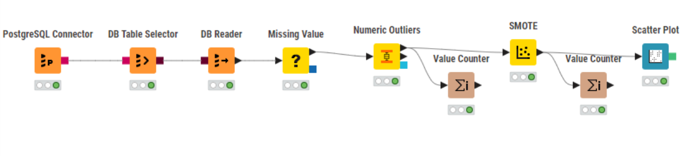
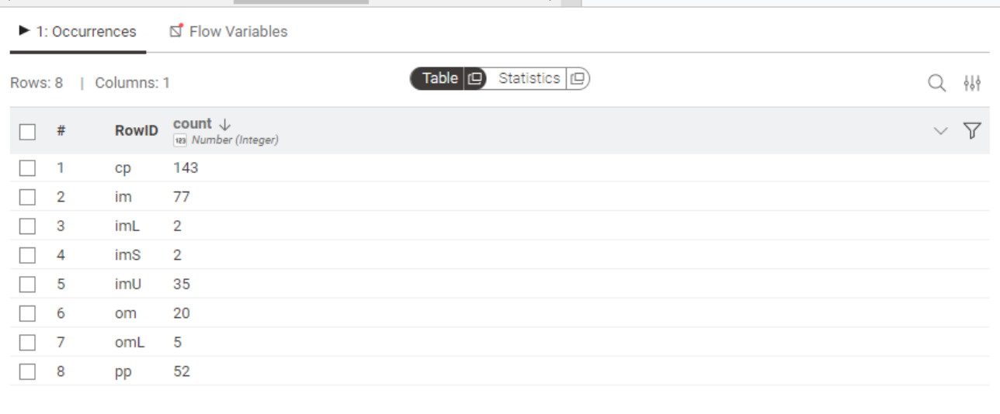
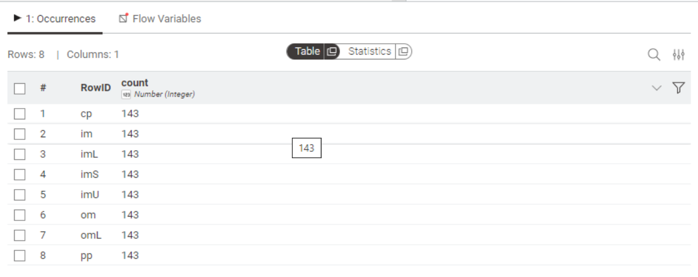
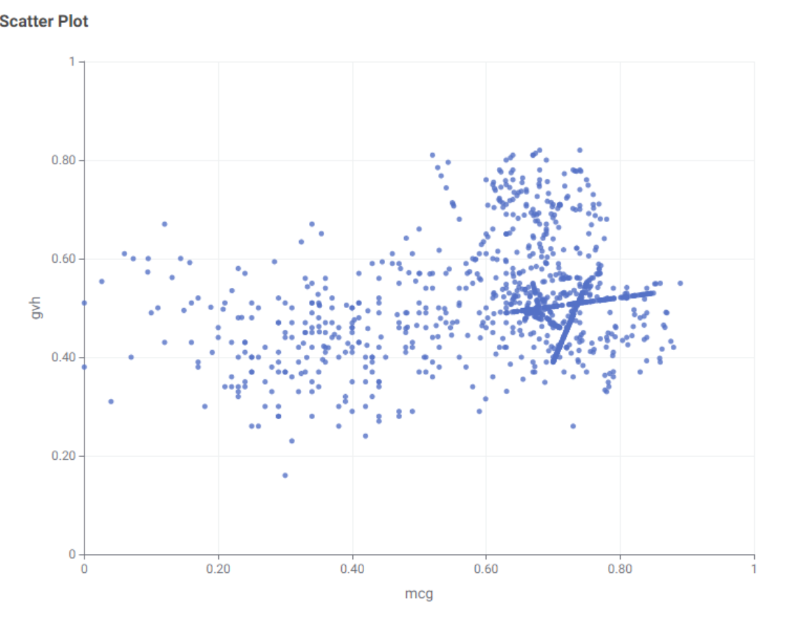

Analisis Data Ecoli Menggunakan KNIME#
Pada tahap data prepocessing merupakan langkah fundamental sebelum melakukan analisis lanjutan atau membangun model pembelajaran mesin. Pada penelitian ini, analisis dilakukan terhadap dataset Ecoli menggunakan KNIME Analytics Platform. Fokus utama dari analisis ini adalah:
Mengidentifikasi dan menangani nilai hilang (missing values),
Mendeteksi keberadaan data pencilan (outlier), serta
Menangani ketidakseimbangan data (unbalanced dataset) agar data menjadi lebih representatif.
Seluruh proses dilakukan secara terstruktur menggunakan workflow KNIME yang terdiri dari beberapa node utama, sebagaimana ditunjukkan pada gambar berikut:

Penjelasan Tahapan Proses KNIME#
1. PostgreSQL Connector#
Tahapan pertama dalam workflow adalah PostgreSQL Connector, yang berfungsi untuk membangun koneksi antara KNIME dan basis data PostgreSQL. Node ini mengatur konfigurasi koneksi seperti:
Host dan port database (port 5432),
Nama database tempat dataset disimpan,
Kredensial pengguna (username dan password).
Setelah koneksi berhasil dibuat, KNIME dapat langsung mengakses data tanpa harus mengekspor file secara manual.
2. DB Table Selector#
Node DB Table Selector berfungsi untuk memilih tabel yang akan digunakan dari database yang sudah terhubung. Karena satu database dapat berisi banyak tabel, maka pada tahap ini saya menggunakan tabel ecoli.
3. DB Reader#
Setelah tabel ditentukan, node DB Reader digunakan untuk membaca isi tabel dan mengonversinya menjadi format data KNIME yang siap dianalisis. Proses ini memindahkan data dari lingkungan database ke lingkungan analisis KNIME, di mana setiap kolom dan baris menjadi node data yang bisa diolah lebih lanjut.
Dataset berisi kolom: id, protein_name, mcg, gvh, lip, chg, aac, alm1, alm2, localization_class
4. Missing Value Analysis#
Tahapan selanjutnya adalah analisis dan penanganan nilai hilang (Missing Value). Data yang memiliki missing values dapat menyebabkan bias analisis atau error pada algoritma pembelajaran mesin. Node Missing Value dalam KNIME digunakan untuk mendeteksi kolom yang memiliki nilai kosong serta melakukan penanganan berdasarkan tipe datanya.
Beberapa metode penanganan umum yang digunakan:
Kolom numerik → nilai kosong dapat diganti dengan rata-rata (mean), median, atau nilai konstan tertentu.
Kolom kategorikal → nilai kosong dapat diganti dengan modus (nilai yang paling sering muncul).
Dalam dataset Ecoli, proses ini memastikan setiap atribut mcg, gvh, lip, chg, dan lainnya tidak memiliki entri kosong yang dapat mengganggu analisis berikutnya.
5. Numeric Outlier Detection#
Setelah missing value ditangani, analisis dilanjutkan dengan deteksi data pencilan (outlier) menggunakan node Numeric Outliers. Node ini mengidentifikasi data numerik yang nilainya menyimpang jauh dari pola umum. Outlier dapat muncul karena kesalahan pengukuran, kesalahan input data, atau fenomena alami yang jarang terjadi.
Metode yang digunakan umumnya adalah IQR (Interquartile Range), dengan prinsip sebagai berikut:
Hitung kuartil pertama (Q1) dan kuartil ketiga (Q3),
Hitung rentang antar-kuartil: IQR = Q3 - Q1,
Tentukan batas bawah dan batas atas:
Batas bawah = Q1 − 1.5 × IQR
Batas atas = Q3 + 1.5 × IQR
Nilai yang berada di luar batas tersebut dikategorikan sebagai outlier.
Deteksi ini membantu mengidentifikasi apakah terdapat data ekstrem pada atribut mcg, gvh, lip, chg, aac, alm1, alm2 yang dapat mengganggu distribusi data.
6. Value Counter (Sebelum SMOTE)#
Node Value Counter digunakan untuk menghitung jumlah data pada setiap kategori dalam kolom target (localization_class). Hasil dari tahap ini menunjukkan tingkat ketidakseimbangan (imbalanced) antar kelas.
Contoh hasil sebelum SMOTE:

7. SMOTE (Synthetic Minority Oversampling Technique)#
Untuk mengatasi ketidakseimbangan kelas, digunakan teknik SMOTE (Synthetic Minority Oversampling Technique). Metode ini tidak sekadar menduplikasi data minoritas, tetapi menghasilkan data sintetis baru dengan cara:
Mengidentifikasi k-nearest neighbors dari setiap data minoritas.
Membuat data baru di antara dua titik minoritas dengan interpolasi acak.
Mengulangi proses hingga jumlah data minoritas seimbang dengan kelas mayoritas.
Dengan cara ini, dataset menjadi lebih seimbang tanpa kehilangan variasi data. Hal ini meningkatkan performa algoritma mesin dalam mengenali pola dari setiap kelas secara lebih adil.
8. Value Counter (Setelah SMOTE)#
Setelah dilakukan balancing dengan SMOTE, node Value Counter digunakan kembali untuk memverifikasi hasilnya. Kini jumlah data di setiap kelas sudah relatif sama, menunjukkan bahwa dataset telah berhasil diseimbangkan.
Contoh hasil setelah SMOTE:

9. Scatter Plot Visualization#
Tahapan terakhir adalah visualisasi data menggunakan Scatter Plot. Visualisasi ini menampilkan hubungan antara dua atribut numerik, antara mcg (sebagai sumbu X) dan gvh (sebagai sumbu Y). Setiap titik merepresentasikan satu observasi dalam dataset.
Berikut Hasil dari Scatter Plot:
